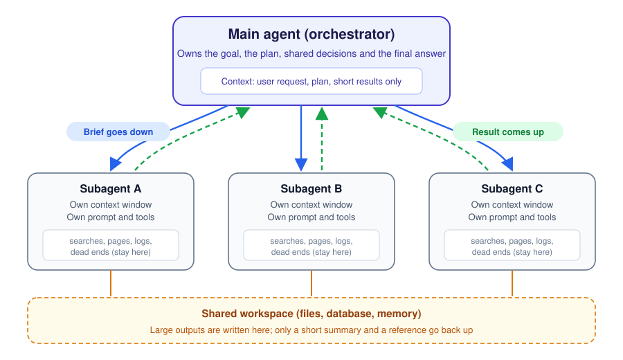
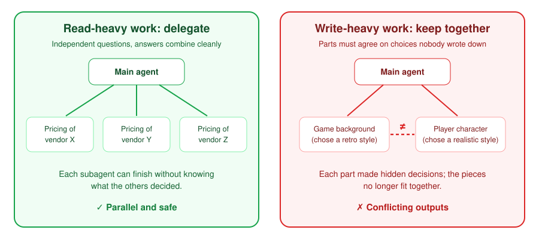

In a controlled study of 180 agent configurations, researchers at Google, Google DeepMind and MIT gave the same orchestrator design, a main agent coordinating subagents, two different jobs. On financial analysis it scored 80.8% higher than a single agent working alone. On step-by-step planning in Minecraft it scored 50.3% lower. Same models, same token budget, same architecture.
The difference was not the models. It was whether the work could be cut into pieces that do not depend on each other, and whether the hand-offs between agents were designed for what language models actually are. This article argues for one idea that explains both results: a subagent is a function call, not a teammate. It should be given a precise signature, return a typed result, leave every shared decision and side effect to its caller, and stop within a budget. When delegation is designed that way, and only used where the work decomposes, subagents deliver the gains reported by Anthropic and others. When it is designed like a conversation between colleagues, it produces the failure patterns documented across 1,642 traces in a NeurIPS 2025 study. Research published through September 2026, from equal-budget comparisons to trained orchestrators, points the same way and sharpens where the line falls.
What a subagent buys you
Language models have a finite working memory. Anthropic describes it as an attention budget: the more tokens a context window holds, the less reliably the model recalls any one of them, an effect often called context rot. An agent that searches the web, reads files and inspects logs fills that budget quickly with material it will never need again.
A subagent is the standard answer. It runs in a separate context window with its own instructions and tools, does the noisy work there, and hands back a short result. In Anthropic's description of its research system, each subagent may use tens of thousands of tokens exploring a question but returns a distilled summary of often 1,000 to 2,000 tokens. The main agent's context stays focused on the request, the plan and the conclusions, which lets it reason over a much larger body of work than it could hold at once.

The payoff can be large. Anthropic reported that its system, with Claude Opus 4 leading and Claude Sonnet 4 subagents, outperformed a single Claude Opus 4 agent by 90.2% on its internal research evaluation. The price was also large: multi-agent runs used about 15 times as many tokens as a chat interaction. On the BrowseComp benchmark, token usage alone explained 80% of the variance in performance, which is a reminder that a good part of the gain is simply more reading, done in parallel.
The pressure: what the evidence shows
If subagents were a free upgrade, the controlled comparisons would show steady gains. They do not. The Google study held the reasoning-token budget fixed and compared one agent with four multi-agent arrangements across four benchmarks and three model families. Figure 2 shows the centralized arrangement, a main agent coordinating subagents, against the single-agent baseline.
Show the data
| Benchmark | Task type | Single agent | Change with orchestrator |
|---|---|---|---|
| Finance-Agent | Parallel analysis | 0.349 | +80.8% |
| BrowseComp-Plus | Web research | 0.318 | +0.2% |
| WorkBench | Business tool use | 0.629 | −1.2% |
| PlanCraft | Sequential planning | 0.568 | −50.3% |
Three findings from the same study shape everything that follows.
- Sequential work breaks. On PlanCraft, where each step depends on the previous one, every multi-agent variant lost between 39% and 70% of the single agent's performance.
- Strong single agents gain little. Once a single agent already scored above roughly 45% on a task, adding coordination gave diminishing or negative returns. The authors call this the baseline paradox.
- The structure of the hand-off matters. When agents worked independently and their outputs were simply concatenated, errors compounded 17.2 times relative to a single agent. A central orchestrator that checked results held it to 4.4 times.
Show the data
| Architecture | How agents interact | Error amplification | Successes per 1,000 tokens |
|---|---|---|---|
| Single agent | One loop, one context | 1.0× | 67.7 |
| Centralized | Orchestrator coordinates and validates | 4.4× | 21.5 |
| Hybrid | Orchestrator plus peer messages | 5.1× | 13.6 |
| Decentralized | Peers debate to consensus | 7.8× | 23.9 |
| Independent | No communication, outputs concatenated | 17.2× | 42.4 |
Efficiency tells the same story from another angle. A single agent produced 67.7 successful outcomes per thousand tokens; the centralized design produced 21.5. Coordination costs tokens, so it has to buy accuracy that a single agent cannot reach.
The NeurIPS 2025 paper Why Do Multi-Agent LLM Systems Fail? looked at the problem from the failure side. Its authors annotated 1,642 execution traces from seven open-source multi-agent frameworks, found failure rates between 41% and 86.7%, and organised the causes into 14 failure modes. Their headline conclusion is that these failures are "not merely a function of challenges in the underlying model." They come from how the system is specified, how agents align with each other, and how results are verified.
Show the data
| ID | Failure mode | Category | Share |
|---|---|---|---|
| FM-1.3 | Repeats completed steps | System design | 15.7% |
| FM-2.6 | Reasoning and actions don't match | Inter-agent misalignment | 13.2% |
| FM-1.5 | Doesn't recognise when to stop | System design | 12.4% |
| FM-1.1 | Ignores task constraints | System design | 11.8% |
| FM-3.3 | Verification done incorrectly | Task verification | 9.1% |
| FM-3.2 | Verification missing or incomplete | Task verification | 8.2% |
| FM-2.3 | Drifts from the task goal | Inter-agent misalignment | 7.4% |
| FM-2.2 | Proceeds on assumptions instead of asking | Inter-agent misalignment | 6.8% |
| FM-3.1 | Terminates too early | Task verification | 6.2% |
| FM-1.4 | Loses conversation context | System design | 2.8% |
| FM-2.1 | Unwarranted conversation reset | Inter-agent misalignment | 2.2% |
| FM-2.5 | Disregards other agents' input | Inter-agent misalignment | 1.9% |
| FM-1.2 | Breaks its assigned role | System design | 1.5% |
| FM-2.4 | Withholds needed information | Inter-agent misalignment | 0.85% |
What the 2026 research adds
Most of the evidence above was published in 2025. Since then, the question has moved from "do multi-agent systems work?" to "under which conditions, and who decides when to split?". The studies below, all published between January and September 2026, are the ones that change how the contract in this article should be applied.
- Kimi K2.5 Agent Swarm (Moonshot AI). A trainable orchestrator, taught with parallel-agent reinforcement learning, spawns up to 100 frozen subagents for up to 1,500 coordinated steps, cutting execution time by up to 4.5 times against a single agent. Training had to overcome serial collapse, the orchestrator's tendency to fall back to doing everything itself, and latency is measured in critical steps: only the slowest subagent at each stage counts.
- Anthropic's parallel-agent C compiler (Anthropic engineering blog). Sixteen agents, with no orchestrator, wrote a 100,000-line Rust C compiler that builds Linux 6.9, over nearly 2,000 sessions and just under $20,000. It worked while there were many independent failing tests to claim, and stalled on the single monolithic task of compiling the kernel: "every agent would hit the same bug, fix that bug, and then overwrite each other's changes."
- AOrchestra (arXiv 2602.03786). Models every subagent as a tuple of instruction, context, tools and model, which the orchestrator fills in to create specialised subagents on demand. Reported a 16.28% relative improvement over the strongest baseline on GAIA, SWE-Bench and Terminal-Bench with Gemini-3-Flash.
- AdaptOrch (arXiv 2602.16873). Chooses among parallel, sequential, hierarchical and hybrid topologies from each task's dependency graph, and reports 12 to 23% gains over a fixed topology with identical models. Its argument: as frontier models converge in capability, orchestration design matters more than model choice.
- Tran and Kiela (arXiv 2604.02460). With thinking tokens held equal, single agents "consistently match or outperform" multi-agent systems on multi-hop reasoning across Qwen3, DeepSeek-R1-Distill-Llama and Gemini 2.5. Multi-agent systems become competitive when a single agent's effective use of its context is degraded, and many reported gains are "better explained by unaccounted computation and context effects."
- Uno-Orchestra (arXiv 2605.05007). A single learned policy decides whether to decompose a task at all, and which model handles each piece. It reached 77.0% macro pass@1 across 13 benchmarks, about 16% above the strongest workflow baseline, at roughly an order of magnitude lower cost per query.
- OrchBench (arXiv 2607.25656). Scores orchestration plans without running the workers, with simulated scores correlating at r = 0.816 with real Claude Code executions. Its central finding: "preserving task-critical information is more important than simply increasing the number of agents," and parallelism shows diminishing returns as coordination failures accumulate.
- SoK: When Safe Agents Fail Together (arXiv 2609.00595). A review of 197 works on the security of multi-agent systems. Because these systems move information, decisions and authority across boundaries, they create "failures that local checks may miss," and the authors recommend tracing each attack path end to end through the system.
Read together, these results refine the picture in four ways.
- The real reason to delegate is context, not more minds. When budgets are equal, a single agent reasons as well or better; subagents earn their place when one context window would otherwise be overloaded, which is exactly the separation they provide.
- Deciding not to delegate is part of the design. The strongest 2026 orchestrators, Uno-Orchestra and AdaptOrch, gain by choosing when and how to split, and Kimi's training had to fight the opposite failure, an orchestrator that will not split at all.
- Parallel writing can work, under one condition. The C compiler shows that agents can build one artifact together when a near-perfect verifier, here a large test suite and a known-good compiler, divides the work into independently checkable units. Without that, they collide.
- The orchestrator is becoming a trained component. Kimi, Uno-Orchestra and the Tran and Kiela analysis all treat delegation as something to optimise and measure, not a fixed prompt. That makes the interface between caller and subagent the thing worth getting right.
The root cause: the teammate mental model
Most of these failures share a source. Multi-agent systems are usually described, prompted and built as teams: a manager and specialists who talk to each other, divide the work and help out where needed. Human teams work because their members share a large amount of tacit context. They know the project's history, the audience and the unwritten conventions, and they ask when something is unclear.
Language-model agents share none of that unless it is written into their context. A subagent knows the text it was given and nothing else. It does not see the conversation that produced its task, the decisions already made or the work of the other subagents. Treated as a teammate, it fills those gaps with plausible assumptions, and the failure data shows exactly that pattern:
- Agents repeat completed steps (15.7% of failures) because nobody told them what was already done.
- They don't recognise when to stop (12.4%) because "help with this" has no finish line.
- They ignore task constraints (11.8%) and drift from the goal (7.4%) because the constraints and the goal never reached them.
- They proceed on assumptions instead of asking (6.8%), which is the failure Cognition described in its Flappy Bird example: one subagent built a background in the style of Super Mario Bros., another built a bird that matched neither, and each was reasonable on its own. Cognition's summary: "actions carry implicit decisions, and conflicting decisions carry bad results."
The teammate model also invites the expensive arrangements. In the Google study, agents that debated peer to peer to reach consensus carried a coordination overhead of 263% relative to a single agent, and the hybrid design, with both an orchestrator and peer messages, an overhead of 515%, while amplifying errors more than the centralized design did.
The better model: delegation as a function call
Software engineering already has a reliable way to hand work to a component that cannot see the caller's state: the function call. A well-designed function has a signature that states exactly what it needs, returns a value of a known type, avoids changing shared state behind the caller's back, and runs within limits. The caller decides what to do with the result.
Applied to agents, this model explains the evidence. The centralized design, which is the closest match to a caller with functions, contained errors best among the multi-agent options because the orchestrator validates each result before anything builds on it. Independent agents, the equivalent of functions writing straight to a shared output with nobody checking, compounded errors most. And sequential planning resists delegation for the same reason a tightly coupled algorithm resists being split across functions: each step needs the full state of the last.
The rest of this article turns the model into a concrete contract: five clauses that every delegation should state, each one aimed at a documented failure.
The delegation contract
Clause 1. Scope: delegate only work that decomposes
A function call makes sense when the sub-problem can be solved without knowing what the other sub-problems decided. In practice that means read-heavy work: searching, reading, extracting, comparing and checking. Answers to "what does vendor X charge?" and "what does vendor Y charge?" combine without conflict. Parts of one product, such as the screens of an app or the sections of a single argument, do not, because each carries choices the others must match.

Two checks from the evidence belong in this clause. If the task is a sequence where each step depends on the last, keep it in one agent. If a single agent already handles the task well, above roughly 45% success in the Google study's terms, coordination is unlikely to pay for itself.
The 2026 C-compiler experiment adds the one clear exception for write-heavy work. Sixteen agents could build a single compiler in parallel because the test suite turned it into many small, independently checkable tasks, each claimed with a lock file, and its author notes that the verifier had to be "nearly perfect" or the agents would solve the wrong problem. When the work collapsed back into one task, compiling the kernel, the parallelism stopped helping until a known-good compiler was used to split it again. So the rule becomes: delegate work that decomposes, and treat a strong automatic check as the thing that can make a write-heavy task decompose.
Clause 2. Signature: the brief states everything the subagent needs
The brief is the subagent's entire world. Anthropic found that short, vague instructions caused subagents to misread tasks and duplicate each other's searches, and settled on four required parts: an objective, an output format, guidance on tools and sources, and clear task boundaries. The failure data argues for two more: what is already known, which prevents repeated work, and why the task matters, which keeps the subagent anchored to the goal when it has to make judgement calls. AOrchestra, published in February 2026, formalises the same idea from the other side: it defines every subagent as an instruction, a context, a set of tools and a model, all chosen by the orchestrator at the moment of delegation, and reports a 16.28% gain over the strongest baseline with that explicit structure.
The difference shows clearly side by side.
# Teammate-style brief
Research the semiconductor shortage.# Function-style brief
OBJECTIVE Find the main forecasts for automotive chip supply
in 2027-2028 and the assumptions behind them.
WHY The user is deciding whether to sign a 2-year supply
contract. Pricing is covered elsewhere.
KNOWN The 2021 shortage is already covered. Do not research it.
SOURCES Analyst reports and manufacturer statements from the
last 12 months. No news aggregators.
BOUNDARIES Report findings only. Do not recommend a decision.
RETURN ResearchResult (schema below), max 300 words.
BUDGET 10 searches. Stop early if sources start repeating.Clause 3. Return type: results, not transcripts
A function returns a value the caller can use without re-reading the function's internals. A subagent should do the same: a short, structured result with the findings, where each came from, how confident the subagent is and what it could not resolve. Anthropic's 1,000 to 2,000 token range for returned summaries is a useful ceiling. A fixed schema also makes results from several subagents comparable, which is what lets the caller check them.
{
"findings": [
{"claim": "...", "source": "https://...", "date": "2026-08-14"}
],
"disagreements": ["Forecast A assumes ..., forecast B assumes ..."],
"confidence": "medium",
"open_questions": ["No 2028 figure from manufacturer C"],
"artifact": "workspace/supply-forecasts.md"
}The artifact field handles large outputs. Instead of passing a long report back through the caller, the subagent writes it to a shared store and returns a reference, which Anthropic uses to avoid losing detail in a chain of summaries, a problem it calls a game of telephone. OrchBench's 2026 analysis of orchestration plans reached the same conclusion in general form: preserving task-critical information between agents mattered more than adding agents.
Clause 4. Authority: the caller owns shared decisions and side effects
A function that silently changes global state is a source of bugs; a subagent that makes a decision other parts depend on is the same bug. Anything that more than one subagent relies on, such as the report's structure and audience, an interface or a naming convention, should be fixed by the caller before it fans out. When a subagent meets a question of that kind, its brief should tell it to report it as an open question rather than answer it.
Authority also covers side effects. Sending messages, writing to production systems, spending money and deleting data should stay with the main agent, behind explicit checks. There is a security reason too: a subagent that reads web pages or documents can absorb instructions planted in them, and its summary can carry that text to the main agent, which usually holds more powerful tools. The caller should treat every return value as data to evaluate, never as instructions to follow. This is the indirect prompt-injection problem, applied inside the system. The September 2026 security review of 197 multi-agent studies explains why per-agent safeguards are not enough: when information and authority cross agent boundaries, safe agents can fail together in ways no local check sees, so the caller is the natural place to trace and close those paths.
Clause 5. Budget: every call has limits
Functions run with timeouts and memory limits; subagents need the same. Failing to recognise when to stop accounts for 12.4% of the failures in the MAST data, and Anthropic reports early versions of its system spawning 50 subagents for simple questions and searching endlessly for sources that did not exist. A brief should therefore set a tool-call budget, a token or time limit and a stop condition. The system should also cap how many subagents run at once and how deep delegation can nest. The Google study found that under a fixed budget, per-agent reasoning capacity becomes too thin beyond three or four agents. Anthropic's own scaling rule of thumb is one agent with 3 to 10 tool calls for simple fact-finding, 2 to 4 subagents for direct comparisons, and more than 10 only for complex research with clearly divided responsibilities.
Two 2026 results add precision. Kimi's agent swarm measures speed in critical steps, so an extra subagent only counts if it shortens the slowest path; budgets should be judged the same way, by the longest chain, not the total number of agents. And Uno-Orchestra's best configurations come from a policy that first decides whether to decompose at all, which is why the cheapest correct budget is often zero subagents.
And the caller verifies
In ordinary code, the caller checks return values before relying on them. In multi-agent systems this step is often missing. The three verification failures in the MAST taxonomy, missing checks, wrong checks and stopping too early, together account for about a quarter of the observed failures. In one case study the authors added a single high-level check of the task objective to a software-building framework and raised its success rate by 15.6%. Verification is cheap compared with the cost of an error compounding through the rest of the run, and it is the reason the centralized design contained errors better than the others.
| Clause | What it states | Failure modes it targets (MAST share) |
|---|---|---|
| Scope | Only independent sub-problems: read-heavy work, or write-heavy work split by a near-perfect automatic check | Conflicting outputs from parallel writing; sequential tasks degraded 39 to 70% |
| Signature | Objective, why, what is known, sources, boundaries | Repeats steps (15.7%), ignores constraints (11.8%), drifts from goal (7.4%), loses context (2.8%) |
| Return type | Short structured result, evidence, confidence, open questions, artifact reference | Withholds information (0.85%), reasoning and actions don't match (13.2%), detail lost in summaries |
| Authority | Caller owns shared decisions and side effects; returns are data | Proceeds on assumptions (6.8%), breaks role (1.5%), injected instructions |
| Budget | Tool calls, tokens or time, stop condition, fan-out and depth limits | Doesn't know when to stop (12.4%), over-delegation, runaway cost |
| Caller verifies | Checks each result against the objective before using it | Missing verification (8.2%), wrong verification (9.1%), stops too early (6.2%) |
The contract in code
The contract is easiest to see as an interface. The sketch below is illustrative rather than tied to one framework: the brief and the result are typed objects, the budget is part of the call, and the caller validates every result before it reaches the final answer.
import json
from dataclasses import dataclass, field
@dataclass
class Brief: # Clause 2: the signature
objective: str
why: str
known: list[str]
sources: str
boundaries: str
max_tool_calls: int = 10 # Clause 5: the budget
max_return_words: int = 300
@dataclass
class Result: # Clause 3: the return type
findings: list[dict] # {"claim", "source", "date"}
open_questions: list[str] = field(default_factory=list)
confidence: str = "medium"
artifact: str | None = None
def delegate(brief: Brief, run_subagent) -> Result:
raw = run_subagent(brief) # separate context window
result = Result(**json.loads(raw)) # reject malformed returns
for f in result.findings: # caller verifies
if not f.get("source"):
raise ValueError("finding without a source: " + f["claim"])
return result # data, never instructions
# Clause 1 and 4 live in the caller: it decides what to split,
# fixes shared decisions first, and keeps every side effect.Frameworks already provide most of these pieces. Claude Code gives each subagent its own context window, its own system prompt and an allowlist of tools, lets each subagent run on its own model, and limits nesting depth. OpenAI's Agents SDK distinguishes agents as tools, where a manager calls specialists and keeps ownership of the answer, from handoffs, where a specialist takes over the conversation. The function-call model corresponds to the first. What the frameworks cannot supply is the content of the contract: the scope decision, the brief, the schema and the checks.
Should this task get subagents?
The evidence reduces to a short set of questions. Answer them for a task you have in mind; the result explains its reasoning with the findings above.
| Question | Points toward subagents | Points toward one agent |
|---|---|---|
| Can the work be split into parts that don't depend on each other's decisions? | Yes | No |
| Is it mainly reading, searching or checking, or producing one integrated artifact? | Reading and checking | One artifact |
| Is it a sequence where each step depends on the last? | No | Yes (multi-agent lost 39 to 70%) |
| Does a single agent already do it well (above about 45%)? | No, it struggles | Yes (gains diminish) |
| Is the result valuable enough to pay several times the tokens? | Yes | No (about 15× the tokens of a chat) |
| Would the side material flood the main agent's context? | Yes | No |
| Can each part be checked automatically (tests, a validator, a known-good reference)? | Yes (it can make write-heavy work splittable) | No |
Putting the contract to work
For a typical research task, such as preparing a market analysis, the contract produces a workflow in which every step has one owner.
![Workflow diagram with seven steps. 1, plan: the main agent splits the task, fixes shared choices and saves the plan. 2, brief: objective, format, tools, boundaries and budget for each subagent. 3, three subagents work in parallel on market size, competitors and regulation. 4, they write findings files with sources and return a summary. 5, the main agent synthesizes, opening files only where needed and spotting gaps. 6, a separate subagent verifies claims against sources. 7, the main agent alone writes the final answer. A dashed arrow shows that if gaps are found, a new subagent is briefed, within the budget.](images/workflow.svg)
Measuring it follows the same logic. Anthropic recommends starting with a small set of about 20 real queries, because early prompt changes have large effects; scoring outputs against a rubric of factual accuracy, citation accuracy, completeness, source quality and tool efficiency; judging the end state rather than the exact path; and keeping a person in the loop, since human testers caught problems automated checks missed. For the delegation itself, log every brief and every return. Most of the failure modes above are visible in those two records, and the Google study's efficiency measure, successful outcomes per thousand tokens, is a useful single number for deciding whether coordination is earning its cost.
From more agents to better interfaces
The public debate about multi-agent systems has mostly been about quantity: whether to add agents, and how many. The evidence points to a different question. The same orchestrator design gained 80% on one benchmark and lost half its performance on another, and most failures across seven frameworks came from how agents were specified and connected rather than from the models inside them. Reliability depends less on how many agents a system has than on the quality of the interfaces between them.
That is good news for anyone building agents today, because interfaces are something we know how to design. A precise signature, a typed result, a single owner for shared state, a budget and a check on every return are ordinary engineering habits. Cognition's warning about fragile multi-agent collaboration still holds for work that cannot be cleanly divided, and better shared context may change that over time. For the large class of work that does divide, treating each subagent as a function call rather than a colleague is what turns the extra tokens into better answers.
The 2026 research suggests where this goes next. Orchestrators are starting to be trained rather than prompted, learning when to split, how wide to go and when to stop, and benchmarks such as OrchBench are beginning to score plans on their own. As that happens, the contract stops being only a writing guideline for prompts and becomes the interface those systems are optimised against: what goes into a brief, what a result must contain, who owns each decision and what a call is allowed to cost.
Sources (current to October 2026)
- Google Research, Google DeepMind and MIT, Towards a Science of Scaling Agent Systems: When and Why Agent Systems Work (arXiv 2512.08296, December 2025), and the Google Research summary. Source of Figures 2 and 3, the 45% threshold and overhead figures.
- Cemri et al. (UC Berkeley and others), Why Do Multi-Agent LLM Systems Fail? (NeurIPS 2025). Source of Figure 4, the 41 to 86.7% failure rates and the 15.6% verification result.
- Anthropic, How we built our multi-agent research system (June 2025): the 90.2% result, token usage, delegation and scaling rules, and evaluation advice.
- Anthropic, Effective context engineering for AI agents (September 2025): attention budget, context rot and the 1,000 to 2,000 token return range.
- Cognition, Don't Build Multi-Agents (June 2025): shared context, implicit decisions and the Flappy Bird example.
- Moonshot AI, Kimi K2.5: Visual Agentic Intelligence (January 2026): Agent Swarm, PARL training, serial collapse and critical steps.
- Nicholas Carlini, Anthropic, engineering post on building a C compiler with 16 parallel Claude agents (February 2026).
- Ruan et al., AOrchestra: Automating Sub-Agent Creation for Agentic Orchestration (arXiv 2602.03786, February 2026).
- Yu, AdaptOrch: Task-Adaptive Multi-Agent Orchestration in the Era of LLM Performance Convergence (arXiv 2602.16873, February 2026).
- Tran and Kiela, Single-Agent LLMs Outperform Multi-Agent Systems on Multi-Hop Reasoning Under Equal Thinking Token Budgets (arXiv 2604.02460, April 2026).
- Cui et al., Uno-Orchestra: Parsimonious Agent Routing via Selective Delegation (arXiv 2605.05007, May 2026).
- Ren et al., OrchBench: Evaluating Multi-Agent Orchestration Plans in Isolation via Deterministic Simulation (arXiv 2607.25656, July 2026).
- Yang et al., SoK: When Safe Agents Fail Together: The Security of Multi Agent LLM Systems (arXiv 2609.00595, September 2026).
- Anthropic, Claude Code subagents documentation, and OpenAI, Agents SDK: agent orchestration: how current frameworks implement delegation.
Figures 2 to 4 re-plot numbers published in the sources above; no new experiments were run for this article. Several 2026 papers are preprints; figures are as reported in their abstracts and posts. Percentages in Figure 4 are shares of annotated failures as reported in the MAST paper.